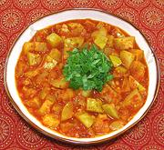

|
Tinda Gourd SabziIndia - Punjab - Tinda Sabzi | ||||
| Makes: Effort: Sched: DoAhead: |
6 cups *** 2 hrs Yes |
A light gourd stew very popular in the Punjab region of India. It is flavorful, has good texture, and is easy to make. See also Comments. For a wetter version with Potatoes, see Tinda Potato Sabzi. | |||
|
|
2 8 7 4 8 ------- 1/2 1/4 1 ------- 1/2 1/2 1 ------- 1-1/2 1 1/4 ------- ar ------- ar |
# oz oz cl oz --- t t t --- t t t --- T t c --- --- |
Tinda Gourd (1) Tomato Onion Garlic Tomato Sauce (2) -- Cooking Spices Chili Powder (3) Turmeric Salt -- Finish Spices Cumin Seed Coriander Seed Garam Masala (4) --------- Oil Cumin, whole Water -- Garnish Cilantro Leaves -- Serve with Basmati Rice |
PREP (40 min)
|
isv_tinda1 190707a inet var - www.clovegarden.com
©Andrew Grygus - agryg@clovegarden.com - Linking
to and non-commercial use of this page is permitted.